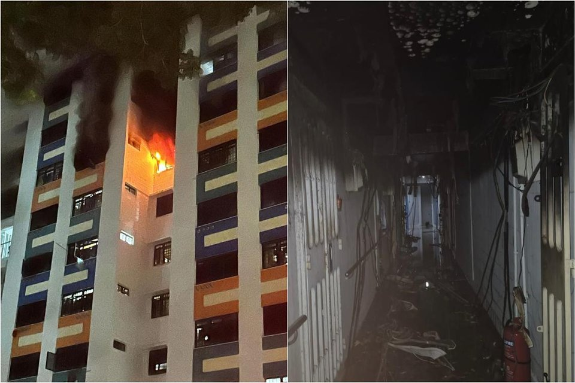

Fire breaks out at Chai Chee Avenue HDB block; 4 taken to hospital, 50 residents evacuated

SINGAPORE – A fire broke out at an HDB block in Chai Chee Avenue on Sept 5, resulting in four people being
taken to hospital and prompting the evacuation of about 50 residents.
The Singapore Civil Defence Force (SCDF) said it was alerted to a fire at Block 31 Chai Chee Avenue at about
11.05pm.
“The living room of an eighth-floor unit was on fire,” SCDF added.
It said that it extinguished the fire with a water jet, and that there was no one inside the flat.
Three people from neighbouring flats were assessed for smoke inhalation. Two of them were taken to Changi
General Hospital and the third to Singapore General Hospital (SGH).
A firefighter was also assessed for smoke inhalation and taken to SGH.
“About 50 people from the affected block were evacuated by the police and SCDF as a precautionary measure,”
the SCDF said, adding that the cause of the fire is being investigated.
East Coast GRC MP Tan Kiat How thanked the SCDF, the East Coast Town Council and grassroots volunteers for
assisting affected residents.
He said they had opened up the Residents’ Network centre for seniors to rest, provided drinks and snacks,
and assisted residents with mobility challenges.
“TC (town council) team was also on hand to restore electricity and water to affected units, and are helping
to clean up the common spaces,” he said. “We will also repaint the facade of the building.”
Mr Tan added that temporary accommodation has been arranged for residents whose flats are badly affected.
Gabrielle Andres
Published Sep 06, 2025, 01:25 PM
Updated Sep 06, 2025, 03:00 PM